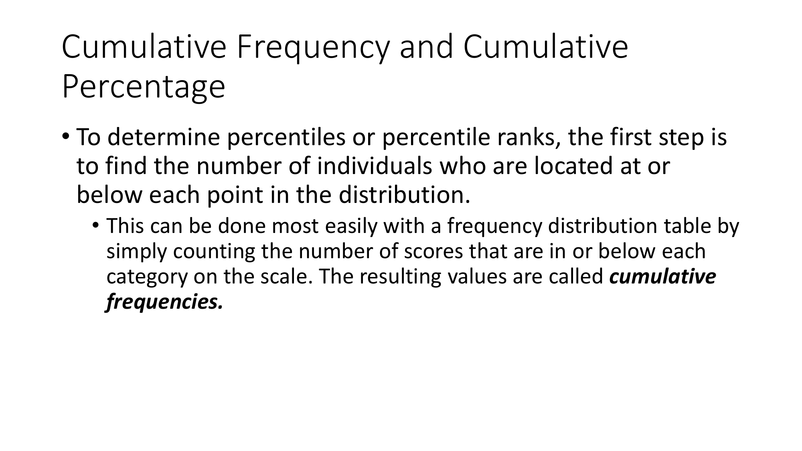
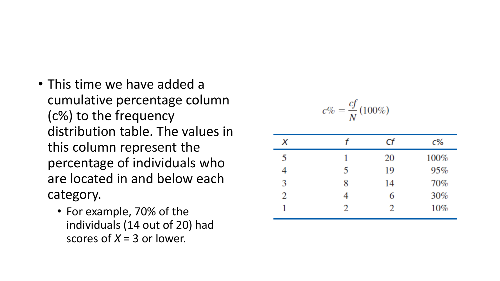

Memahami persentil, peringkat persentil, frekuensi kumulatif ($cf$), aturan emas Batas Nyata Atas (URL), dan metode 4-langkah interpolasi linier data berkelompok.
1. Definisi Peringkat Persentil vs Persentil
Peringkat Persentil (Percentile Rank): Persentase individu yang memiliki skor PADA ATAU DI BAWAH nilai skor tertentu. Input: Skor $X \longrightarrow$ Output: Persentase $c\%$
Persentil (Percentile): Nilai skor spesifik $X$ yang berkorespondensi dengan suatu peringkat persentil tertentu. Input: Persentase $c\% \longrightarrow$ Output: Nilai Skor $X$
2. Aturan Emas Batas Nyata Atas (URL)

📷 Diagram Asli Slide: Frekuensi Kumulatif (cf) & Persentase Kumulatif (c%) Berkorespondensi Tepat Pada Batas Nyata Atas (URL)
🌟 ATURAN EMAS PERSENTIL (THE GOLDEN RULE OF PERCENTILES)
Nilai Frekuensi Kumulatif ($cf$) dan Persentase Kumulatif ($c\%$) SELALU berkorespondensi tepat dengan BATAS NYATA ATAS (UPPER REAL LIMIT - URL) dari interval skor!
3. Prosedur 4-Langkah Interpolasi Linier

📷 Diagram Asli Slide: Ilustrasi Rasio Interpolasi Linier Antara Skala Skor (X) dan Skala Persentase (c%)
Langkah 1: Identifikasi Batas Interval ($\Delta X$ dan $\Delta c\%$).
Langkah 3: Proyeksikan Fraksi ke Skala Dicari:
$$\text{Jarak Terproyeksi} = \text{Fraksi} \times \text{Lebar Penuh Skala Dicari}$$
Langkah 4: Hitung Hasil Akhir:
$$\text{Hasil Akhir} = \text{Batas Bawah Skala Dicari} + \text{Jarak Terproyeksi}$$
💡 CARA CEPAAT MENGHAFAL (MNEMONICS)
🧠 Trik Hafal Persentil vs Peringkat Persentil
Peringkat Persentil mencari **Peringkat (%)**. Persentil mencari **Nilai Skor ($X$)**!
✍️ LATIHAN SOAL INTERAKTIF (Pilihan Ganda & Essay)
Bagian I: Soal Pilihan Ganda (PG)
1. Angka Persentase Kumulatif (c%) pada tabel frekuensi selalu berkorespondensi tepat dengan titik...
2. Persentil ke-50 (P50) pada suatu distribusi frekuensi selalu sama nilainya dengan...
Bagian II: Soal Essay
Soal Essay: Hitunglah Persentil ke-65 (P65) dari data interval 10-14 (URL=14.5, c%=50%) hingga 15-19 (URL=19.5, c%=80%) menggunakan 4-Langkah Interpolasi Linier!